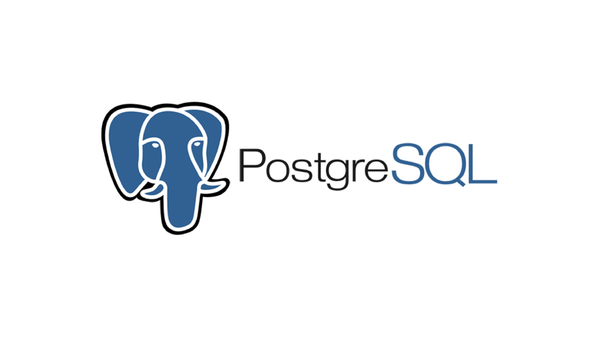

Intro

I am a highly skilled and certified data analyst with a strong passion for leveraging analytical tools, statistics, and computing methodologies to extract valuable insights from data. My competency and diligence are the cornerstones of my professional approach, and I am actively seeking opportunities to apply my expertise in a professional setting.
My technical proficiency extends across a wide array of analytical tools, including Python, SQL (PostgreSQL), and Microsoft Excel. I am well-versed in essential data analysis libraries such as NumPy, Pandas, Matplotlib, Seaborn, and various web scraping and NLP libraries. Additionally, I have hands-on experience in utilizing Scikit-Learn for machine learning tasks, encompassing regression, classification, clustering, and decision-making, while also being adept in deep learning frameworks like TensorFlow and Keras.
Complementing my technical prowess, I possess a rich set of soft skills that facilitate effective communication, data modeling, data processing, and data visualization. I thrive on collaborative teamwork and excel at time management, critical thinking, and problem-solving. My adaptability, coupled with a growth mindset, allows me to stay at the forefront of evolving industry trends. I am also skilled in management, research, storytelling, and public speaking, which enable me to convey data-driven insights with clarity and impact.
In a rapidly evolving data-driven world, I am committed to making data not just informative but actionable, and I look forward to contributing my expertise to your organization's success.
Experience

During my tenure as a Data Analysis and Machine Learning Intern at Code For India Foundation, I embarked on a transformative journey of skill development, project engagement, and community contribution.
Technical Skill Development:
I immersed myself in a structured curriculum that equipped me with a robust foundation in data science and machine learning.
Through hands-on projects and rigorous training, I honed my expertise in essential techniques such as data preprocessing, data analysis, and predictive modeling.
Real-World Projects:
I had the privilege of contributing to high-impact projects that aimed to address real-world challenges. One such project involved disease outbreak prediction, where I applied advanced analytics to create predictive models.
Additionally, I participated in social impact analysis initiatives that allowed me to utilize data-driven insights to make a meaningful difference in our community.
These experiences not only broadened my horizons but also enhanced my problem-solving abilities, as I learned to apply theoretical knowledge to practical scenarios.
Skill Showcase:
To document and showcase my progress, I diligently built a comprehensive repository highlighting the data science and machine learning projects I completed during my internship.
This repository has since become a valuable asset in my professional journey, enabling me to effectively demonstrate my capabilities when seeking opportunities in the field.
Key Technical Skills Acquired:
Analytical Tools: Proficient in Python, SQL (PostgreSQL), and Microsoft Excel.
Data Analysis Libraries: Well-versed in NumPy, Pandas, Matplotlib, Seaborn, web scraping libraries, NLP libraries, and Scikit-Learn.
Machine Learning Frameworks: Experienced in regression, classification, clustering, and decision-making.
My internship at Code For India Foundation was a transformative experience that not only expanded my technical skill set but also instilled in me a profound sense of purpose. I am now more equipped than ever to apply data-driven insights to create meaningful solutions and am eager to continue contributing to the data science and machine learning community.
Projects

I have successfully completed numerous Python-based projects in the realm of machine learning, each accompanied by a comprehensive data analysis. In these projects, I prioritized data quality by meticulously cleaning and preprocessing datasets, ensuring their reliability. I further enriched the datasets through various data processing techniques, including feature engineering and transformation. To make the data's insights more accessible, I created informative data visualizations that unveiled underlying patterns and trends. Importantly, I consistently delivered conclusive insights from these projects, using data analysis and machine learning to extract valuable information. These experiences have endowed me with a robust foundation in data analytics, enabling me to draw meaningful conclusions from intricate datasets.

I have successfully completed a SQL project centered around a music store database. In this project, I leveraged SQL to design and optimize the database schema, manage data, and execute complex queries. Through this hands-on experience, I gained proficiency in database management and SQL query optimization while working with real-world music store data. This project further enhanced my skills in data manipulation and database systems, providing me with valuable insights into database design and maintenance within a practical context.

I have a wealth of experience in utilizing Tableau as a powerful data visualization tool, having completed numerous projects that showcase its capabilities. Through these projects, I have harnessed Tableau's features to create compelling and interactive visualizations, transforming complex datasets into clear, actionable insights. These experiences have not only sharpened my proficiency in data visualization but have also allowed me to effectively communicate data-driven narratives to diverse audiences, making data more accessible and impactful.
Contact